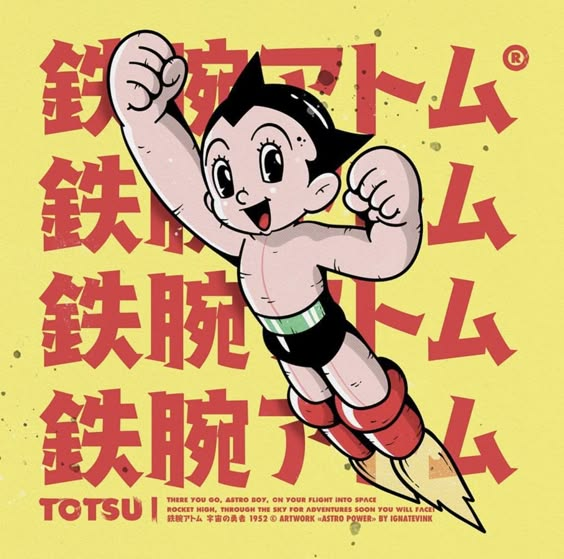

Quién soy yo
Mi nombre es Juan Pablo Rios Peralta, diseñador gráfico de 20 años. Nací en Hidalgo, pero actualmente vivo en Puebla, donde he estado desarrollando mis habilidades creativas y persiguiendo mis pasiones. Me encanta ser meticuloso con los detalles, y eso se refleja en mi trabajo, especialmente cuando me concentro en la composición y la maquetación, asegurándome de que cada elemento esté perfectamente alineado y comunique algo importante.
Siempre estoy buscando nuevas formas de expresarme, ya sea a través del diseño, la fotografía o incluso la escritura. Soy alguien curioso, con muchas ganas de seguir aprendiendo y enfrentando nuevos desafíos.
Los gatos me fascinan; su tranquilidad me ayuda a enfocarme, y creo que esa calma influye en la forma en que abordo mis proyectos. La poesía también ocupa un lugar importante en mi vida. A través de las palabras encuentro inspiración para mis diseños, descubriendo formas únicas de conectar emociones e imágenes.
La fotografía es otra de mis grandes pasiones. Me permite capturar y narrar historias visuales, lo que complementa mi estilo gráfico. Disfruto jugar con la luz y las sombras, y muchas veces exploro esos contrastes en mi trabajo. Además, el género de terror es algo que realmente me atrae, no solo como entretenimiento, sino porque me permite explorar emociones intensas y construir atmósferas intrigantes, lo cual se refleja en mis proyectos. Me gusta experimentar con texturas y simbolismos oscuros, dándole a mi trabajo un toque único.
Mi Familia
Mi familia es una parte importante de quién soy. Mi papá, David Ríos, es ingeniero y tiene una mente lógica y analítica que siempre me ha impresionado. Es una persona metódica, pero también curiosa, siempre buscando cómo mejorar las cosas a su alrededor. Desde que era niño, me enseñó a ver el mundo de forma práctica, a observar cómo todo está conectado, y creo que esa forma de pensar ha influido mucho en mi manera de diseñar. Aunque su campo es muy técnico, ha sido una gran inspiración para mí en términos de organización y enfoque en los detalles.

Mi mamá, Leonor, es contadora, una mujer muy organizada y detallista, que siempre ha sabido equilibrar todo en casa mientras se ocupa de su trabajo. Es extremadamente disciplinada, y esa capacidad para mantener el orden es algo que admiro profundamente. Además, es creativa en su propia manera: aunque su trabajo con números parece lo opuesto a lo que hago, ella tiene una forma única de resolver problemas y encontrar soluciones, lo que también me ha influido. Siempre ha sido mi apoyo constante, motivándome a seguir mis pasiones sin perder el enfoque en lo práctico.
Ellos, con sus mundos tan diferentes, me han dado una visión equilibrada de la vida, donde puedo ser creativo sin perder de vista la estructura.
Mis materias preferidas
Diseño editorial
Mis clases favoritas han sido, sin duda, las de diseño editorial. Me encanta la combinación de tipografía, imagen y composición para comunicar ideas de manera clara y atractiva. El proceso de crear una maqueta y jugar con la jerarquía visual para guiar al lector me resulta fascinante. Además, disfruto mucho trabajando en la estructura de publicaciones, asegurándome de que cada detalle esté en su lugar, desde la alineación perfecta hasta la correcta elección de colores y estilos tipográficos. Las clases de diseño editorial son donde más he podido expresar mi atención al detalle y mi pasión por la maquetación.
Fotografía
Las clases de fotografía también son de mis favoritas. Me encanta la posibilidad de capturar momentos y contar historias a través de imágenes. La técnica detrás de cada disparo, como controlar la luz, el enfoque y la composición, me fascina. Además, la fotografía me permite explorar mi lado más creativo, ya que puedo experimentar con diferentes estilos y enfoques. Cada sesión es una oportunidad para aprender algo nuevo y mejorar mi capacidad para narrar visualmente, algo que también complemento con mi trabajo en diseño. La fotografía es una forma de expresión que conecta perfectamente con mis otras pasiones creativas.